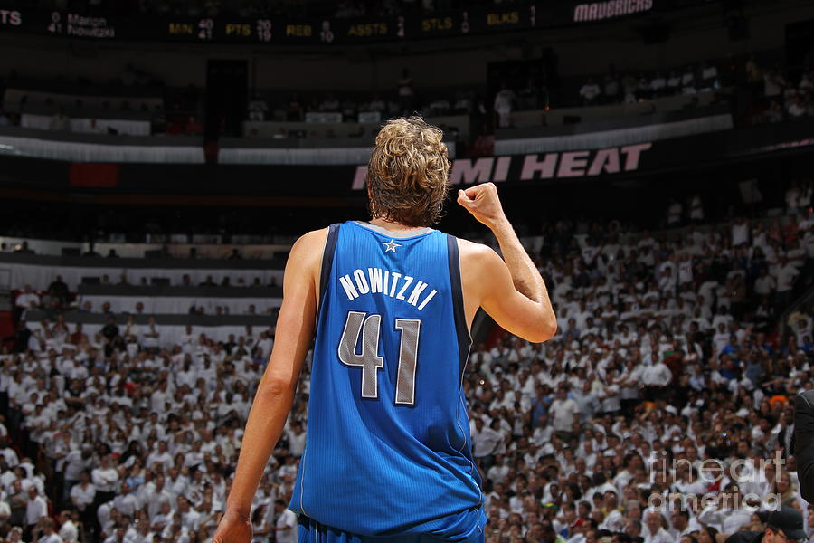

Dallas Mavericks (Mavs) — АҚШ-тың Техас штатындағы Даллас қаласында орналасқан кәсіби баскетбол командасы. Олар NBA-ның Батыс конференциясының Оңтүстік-Батыс дивизионында ойнайды. Команда 1980 жылы құрылған және өз ойындарын American Airlines Center аренасында өткізеді. Mavericks жылдар бойы тұрақты түрде плей-оффқа шығып, мықты ұйым ретінде танылған.
Команданың ең жарқын кезеңі 2000–2010 жылдары болды. Бұл уақытты Дирк Новицки бастаған ұжым ерекше деңгейге көтерді. Новицкидің арқасында Mavericks лиганың ең қауіпті шабуылшыларының біріне айналып, 2011 жылы NBA чемпиондығын жеңіп алды. Сол жылы Даллас финалда суперкоманда Miami Heat-ті жеңіп, өзінің жалғыз чемпиондығын тарихқа жазды.
Соңғы жылдары команда жаңа жұлдыз — словениялық талант Лука Дончиç келгеннен кейін қайтадан лигадағы үздік командалар қатарына қосылды. Дончиç өз ойын өрнегімен, пас беру шеберлігімен және қиын сәттерде шешуші лақтыру жасау қабілетімен танымал. Оның келуімен Dallas Mavericks болашағы өте жарқын саналады.

Дирк Новицки — Dallas Mavericks тарихындағы ең үздік ойыншы. Ол өзінің ерекше стилімен, алыстан лақтыру дәлдігімен және команданы 2011 жылғы чемпиондыққа жеткізген лидерлігімен белгілі. Новицки — NBA тарихындағы ең үздік еуропалық ойыншылардың бірі және Mavericks клубының мәңгілік символы.